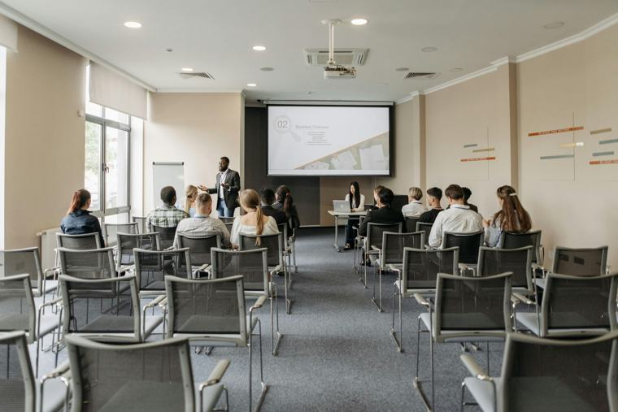

Tổng hợp câu hỏi Part 2 (đã bỏ đáp án mẫu)
Part 2: In this part, I'm going to ask you to describe a picture. Then I will ask you two questions about it. You will have 45 seconds for each response.
1. Describe the picture
 |
|---|
Miêu tả người
VD: In the picture, I can see two people; a man and a child. The man is about 40 and the child is about 5. I think they are father and son.
VD: They are learning in the classroom. The teacher is standing and teaching and the students are listening to him
VD: They are wearing casual clothes
VD: They look focused
VD: In the room, I can see a projector and a screen. On the wall, I can see words
VD: The weather in the picture is very nice. It is sunny and perfect for outdoor activities. VD: The weather in the picture is very hot. The sun is shining (brightly) VD: The weather in the picture is very cold. I can see a lot of snow and the people are wearing warm clothes.
|
|---|
2. Tell me about a time when you attended a useful presentation.
3. Do you think continuous training for employees is important for a company's success?